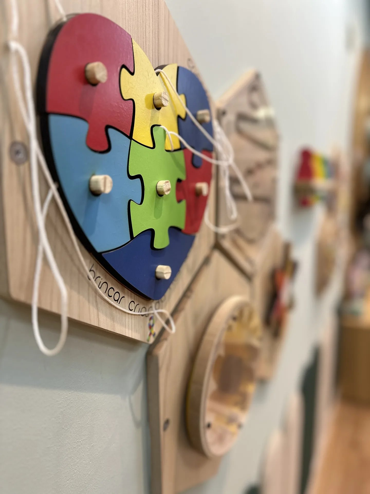
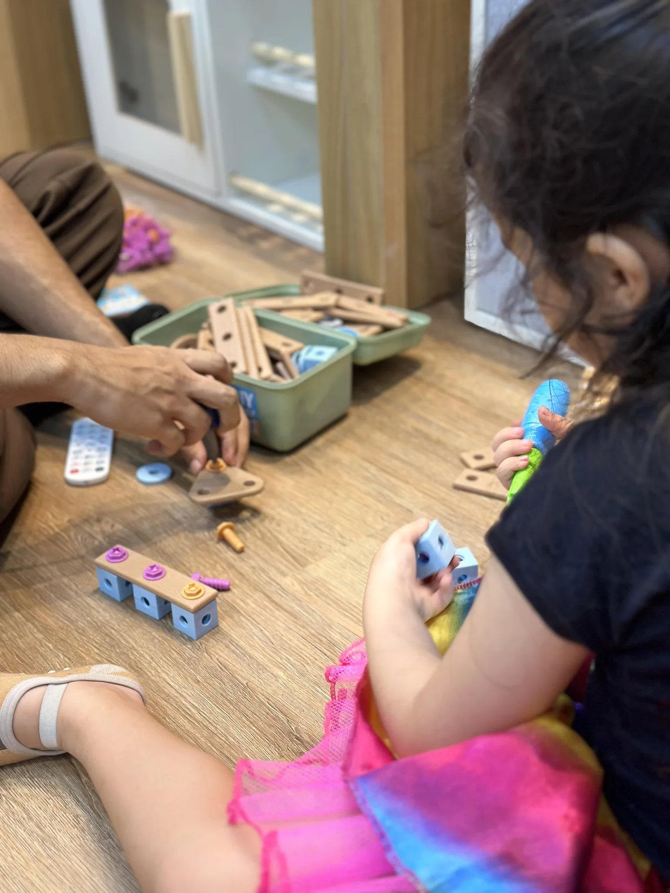
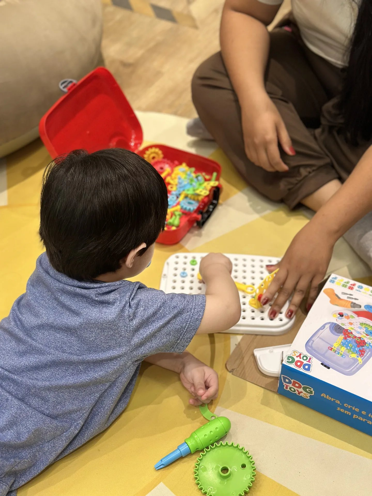

Se você sente que algo está diferente, aqui você vai ser ouvida.
Equipe multidisciplinar, terapia comportamental e um plano que cabe na rotina da sua família, conduzido por Isabella Gonçalves Freitas, psicóloga infantil (CRP 10/4727), em Umarizal, Belém.
Ninguém deveria passar por isso sem ser ouvida.
Você percebe que algo está diferente e ninguém explica direito. As respostas vêm picadas, um profissional de cada vez, e nenhuma conversa com a outra. No meio disso, você ainda segura a casa, o trabalho e a própria cabeça.
Aqui, a primeira conversa não é um encaixe de agenda: é a hora de você ser ouvida. Sem rótulo e sem pressa. A gente entende a rotina da sua família, não só um sintoma, e monta com você um caminho possível.
Como vai funcionar o primeiro contato
Sem formulário longo, sem espera confusa. Três passos, no seu tempo.
Passo 1
Você chama no WhatsApp
Conta em poucas palavras o que está acontecendo. Sem burocracia, sem formulário.
Passo 2
Conversa de acolhimento, sem rótulo
Você é ouvida antes de qualquer coisa. A gente entende a rotina da sua família, não só um sintoma.
Passo 3
Um plano que cabe na sua rotina
Sem prazo fechado, sem promessa de resultado. Um caminho possível, ajustado com você.
Serviços
Uma equipe, um plano só. Veja o que cada especialidade cuida — os termos técnicos estão explicados no glossário.
Avaliação inicial e acolhimento
- Pra quem é
- Toda família que quer entender melhor o que está acontecendo, com ou sem laudo.
- O que acontece
- Uma conversa e observação, sem pressa, para enxergar a rotina completa da criança.
- O que muda pra você
- Você sai com um primeiro plano, não com uma lista de exames.
Psicologia e terapia comportamental
- Pra quem é
- Crianças com birras frequentes, dificuldade de comunicação ou comportamentos que preocupam a família.
- O que acontece
- Sessões que ensinam novas habilidades com repetição afetuosa, apoiadas em Análise do Comportamento.
- O que muda pra você
- Menos "apagar incêndio", mais entender o porquê — e o que fazer a respeito.
Fonoaudiologia
- Pra quem é
- Crianças com fala atrasada, difícil de entender, ou seletividade alimentar.
- O que acontece
- Sessões de estímulo à fala, à linguagem e, quando necessário, à alimentação.
- O que muda pra você
- Mais formas de se entender com o seu filho, no dia a dia.
Terapia Ocupacional
- Pra quem é
- Crianças com dificuldade de coordenação, autonomia nas tarefas do dia, ou hipersensibilidade a som, luz ou toque.
- O que acontece
- Atividades que trabalham integração sensorial e autonomia, do jeito de cada criança.
- O que muda pra você
- Tarefas do dia a dia (vestir, comer, escovar os dentes) ficam menos batalha.
Psicopedagogia
- Pra quem é
- Crianças com dificuldade de aprendizagem: leitura, escrita ou matemática.
- O que acontece
- Estratégias criadas para o jeito de aprender do seu filho, não o contrário.
- O que muda pra você
- Menos "ele não presta atenção", mais um caminho que funciona pra ele.
Avaliação neuropsicológica
- Pra quem é
- Famílias com dúvidas sobre memória, atenção, foco ou desenvolvimento cognitivo.
- O que acontece
- Testes que mapeiam essas funções e orientam escola e terapia.
- O que muda pra você
- Um retrato mais completo, para decisões com mais clareza.
Orientação a pais e escola
- Pra quem é
- Toda família em acompanhamento, e também a escola do seu filho, quando fizer sentido.
- O que acontece
- Sessões só com você para ajustar a rotina em casa, e apoio na conversa com a coordenação pedagógica.
- O que muda pra você
- Você não sai sozinha da reunião com a escola, nem sozinha em casa.
Para quem é
Nenhum desses é um rótulo. É um motivo pra conversar.
Cada mês sem uma estratégia é um mês de casa e escola sem um plano em comum, e isso pesa no tempo e no cansaço de quem cuida. Uma conversa de acolhimento já ajuda a organizar por onde começar.
Ambiente estruturado para o desenvolvimento real
Recursos sensoriais e materiais pedagógicos pensados para intervenções que engajam a criança de forma lúdica e afetiva.

Integração Sensorial
Painéis táteis e quebra-cabeças em madeira que auxiliam na regulação sensorial e foco.

Intervenção Lúdica
Brinquedos de encaixe e pareamento que desenvolvem motricidade fina e raciocínio lógico no chão.

Jogos Estruturados
Materiais adaptados e jogos de regulação para cada fase do desenvolvimento infantil.

Isabella Gonçalves Freitas
Psicóloga infantil · CRP 10/4727
Idealizadora do FaçaAmigos e autora dos e-books O Brincar com Propósito e O Código do Desenvolvimento Infantil. Acredita que entender o comportamento de uma criança é sempre o primeiro passo para acolhê-la.
Convênios e atendimento particular
Vamos atender os convênios abaixo assim que a Clínica abrir, além do atendimento particular. Os detalhes de cada convênio são confirmados na abertura.
O que você pode fazer agora
Mapeamento grátis
Um primeiro retrato do dia a dia do seu filho, em 5 minutos, sem custo.
Fazer o mapeamentoPlayground inclusivo
Horário Inclusivo das 10h às 16h, com menos gente e equipe reforçada.
Conhecer o PlaygroundGuias em Aprender
Textos curtos sobre birra, rotina, laudo e mais, escritos por Isabella.
Ver os guias